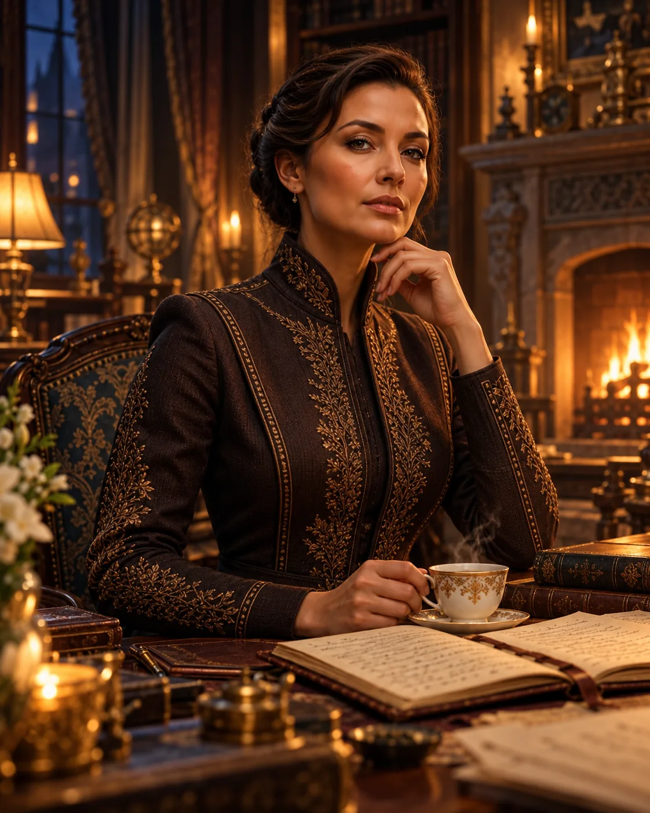

Индивидуально онлайн
Занятия один на один; стоимость и расписание под ваш запрос
Понимать. Решать. Применять
Вернёмся туда, где потерялась логика
Укажите тему или опишите трудность своими словами

Павел Юрьевич
руководитель школы
Новая тема опирается на предыдущую, а в основании остались нерешённые вопросы
сначала с ними не до конца разобрались
потом дроби встретились в уравнениях
затем и в физике. Судя по настойчивости, дроби намерены познакомиться поближе
Расскажите нам об этом. Необязательно сразу знать название нужного параграфа
разобраться с текущими темами, укрепить основу и понять логику решения задач
обсудить его трудности и подобрать подходящую поддержку
повторить физику и математику, на которые опираются учебные дисциплины
вернуться к нужным темам и связать их с новой учебной или рабочей задачей
понять, как устроен мир. Это вполне достаточная причина. Сложных фраз для оправдания любопытства искать не требуется
Так выглядит понимание, к которому стоит стремиться
смотрите на условие и можете объяснить, что дано
понимаете, почему выбираете определённый способ решения
например, велосипедист едет быстрее самолёта, хотя в условии даже не сказано, что он суперчемпион
можете задать точный вопрос там, где ещё нужна помощь
Развиваем четыре подразделения и связываем знания между собой
логика, числа, формы и закономерности. Основа для точных рассуждений и обоснованных решений
движение, энергия и устройство окружающего мира. От наблюдения к объяснению и расчёту
алгоритмы, программирование и работа с данными. Учимся превращать замысел в последовательность действий
возможности ИИ, осмысленное применение и проверка результатов. Хороший вопрос здесь особенно важен
Напишите, с какой темой хотите разобраться и для чего она вам нужна. Обсудим, с чего начать
для кого нужны занятия, какой предмет интересует и что хотелось бы понять или освоить
формат по вашему желанию: онлайн, индивидуально или в группе; стоимость и расписание — под ваш запрос
что означает величина? Почему здесь подходит эта формула? Как проверить ответ?
Можно начать обычными словами: «Не понимаю задачи на движение». Нам не нужна энциклопедическая правильность вашего запроса
Обсудить вашу задачу
Кто вам ответит
Мария Павловна · администратор школы EFIM
EFIM — школа для тех, кто хочет разобраться в физике и математике. Нам близки вопросы «почему?», «откуда это взялось?» и «можно ещё раз?». Именно с них часто начинается понимание
А юмор помогает пережить знакомство с трудной темой. Уравнение от шутки само себя не решит, но смотреть на него уже приятнее. Серьёзно относиться к знаниям можно с улыбкой: Ньютон от этого с яблони не упадёт. Он, впрочем, на ней и не сидел
Мы не публикуем придуманные отзывы. Сайт школы новый — первые отзывы появятся здесь, как только ученики ими поделятся
Будем рады, если ваш отзыв окажется здесь первым
Стоимость и расписание зависят от цели, темы и формата. Свяжитесь с нами — уточним актуальные условия для вашего запроса
Занятия один на один; стоимость и расписание под ваш запрос
Занятия вместе с другими учениками; стоимость и расписание под ваш запрос
Математика, физика, информатика, ИИ и нейросети; условия уточняем при обсуждении
Если что-то останавливает — возможно, ответ здесь
Тогда важно начать с того, что сохранилось, и постепенно восстановить остальное. Прошлые знания не обязаны возвращаться по команде «ну вспоминай же»
Учебнику безразличен ваш год рождения. Значение имеют цель и темы, которые нужно освоить
Опишите ситуацию: какие задания вызывают трудности, что получается самостоятельно, на каком шаге обычно нужна помощь
Да, начните обращение с неё. Укажите тему и цель — так мы сможем обсудить возможности помощи
Его класс, предмет, основные трудности и желаемый результат. Например: «8-й класс, сложно составлять уравнения по условию задачи»
Для чего нужны знания и какие темы предстоит использовать. Если есть пример учебной или рабочей задачи, опишите его
Расскажите, кому нужны занятия, что сейчас не получается и для чего нужны знания
Обсудим запрос и возможности обучения в нашей школе
Можно коротко. Сочинение на тему «Как я провёл жизнь без тригонометрии» необязательно